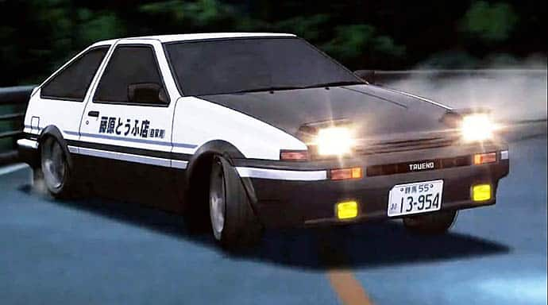
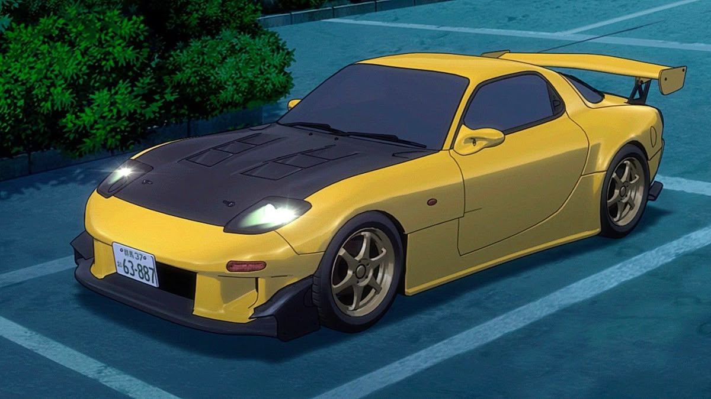
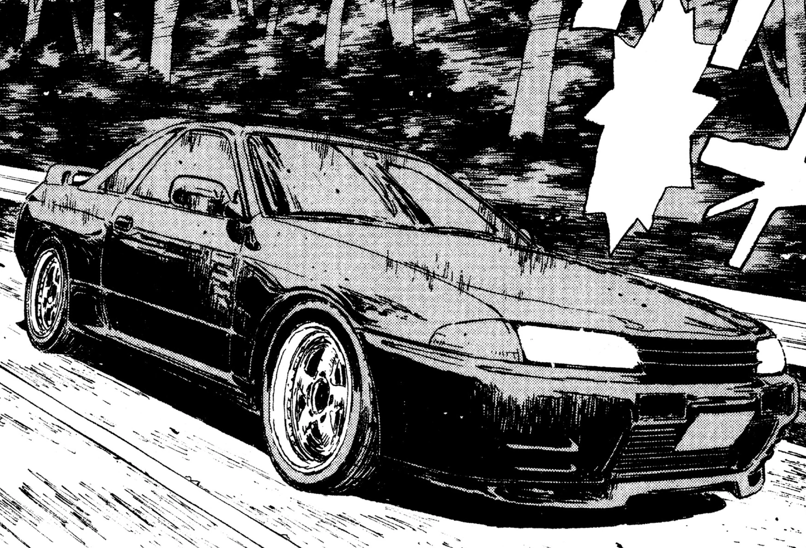

THE MACHINES

TOYOTA SPRINTER TRUENO AE86
Mesin: 4A-GE 20v (High-Rev).
Karakteristik: Keseimbangan sempurna dan kontrol drift luar biasa di turunan Gunung Akina.

MAZDA RX-7 FD3S
Mesin: 13B-REW Rotary.
Karakteristik: Keunggulan pada tenaga tinggi dan aerodinamika untuk lintasan menanjak (uphill).

NISSAN SKYLINE GT-R R32
Mesin: RB26DETT.
Karakteristik: Sistem 4WD ATTESA E-TS yang memberikan traksi maksimal di setiap tikungan tajam.